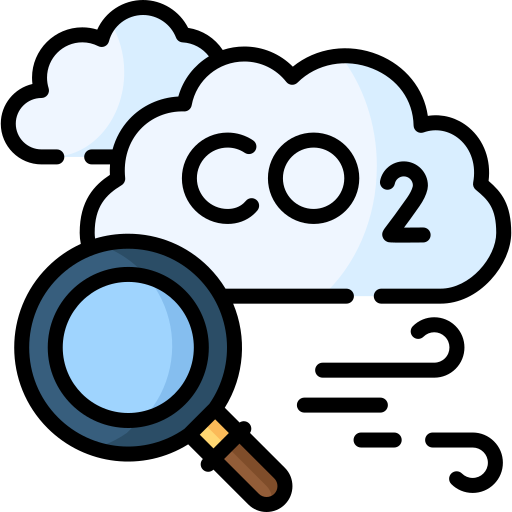

請使用下方搜尋功能查詢
縣市 / 測站名稱
更新時間：--
空污指標AQI
--
良好
PM2.5
細懸浮微粒(μg/m3)
細懸浮微粒(μg/m3)
移動平均：--
小時濃度：--
PM10
懸浮微粒(μg/m3)
懸浮微粒(μg/m3)
移動平均：--
小時濃度：--
O₃
臭氧(ppb)
臭氧(ppb)
O₃移平均：--
小時濃度：--
CO
一氧化碳(ppm)
一氧化碳(ppm)
CO移平均：--
小時濃度：--
SO₂
二氧化硫(ppb)
二氧化硫(ppb)
小時濃度：--
NO₂
二氧化氮(ppb)
二氧化氮(ppb)
小時濃度：--

各項污染物介紹
細懸浮微粒 (PM2.5)
交通污染
(道路揚塵、車輛排放廢氣)、營建施工、工業污染、境外污染、露天燃燒
懸浮微粒 (PM10)
交通污染
(道路揚塵、車輛排放廢氣)、營建施工、工業污染、境外污染、露天燃燒
二氧化硫 (SO2)
自然界 (火山)、燃料中硫份燃燒。
氮氧化物 (NOX)
燃燒過程中，空氣中氮或燃料中氮化物氧化而成，光化學反應中可反應成二氧化氮。
一氧化碳 (CO)
除森林火災、甲烷氧化及生物活動等自然現象產生外石化等燃料之不完全燃燒產生
臭氧 (O3)
係一種由氮氧化物、反應性碳氫化合物及日光照射後產生之二次污染物。